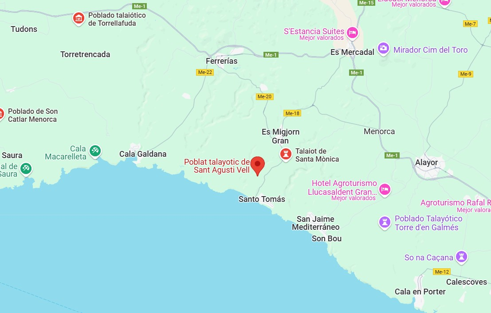

Descripció
Poblat menorquí amb talaiots i estructures relacionades amb activitats religioses.
Ubicació
Situat al terme des Migjorn.

Imatges

Poblat menorquí amb talaiots i estructures relacionades amb activitats religioses.
Situat al terme des Migjorn.